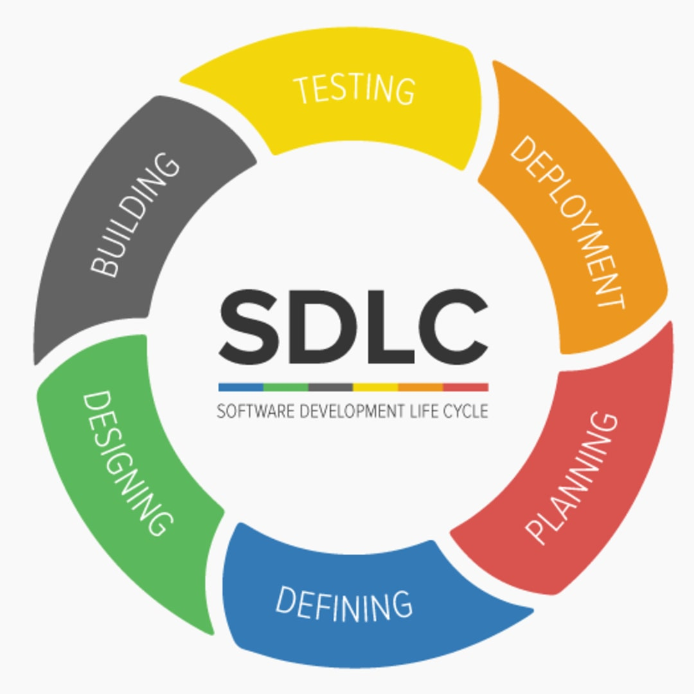

Software development life cycle (SDLC)
SDLC models show the ways to navigate through the complex and demanding process of software building. A
project’s quality, timeframes, budget, and ability to meet the stakeholders’ expectations largely depend on the
chosen model.
Click here to know more
There are more than 50 recognized SDLC models in use. None of them is perfect, and each brings its favorable
aspects and disadvantages for a specific software development project or a team. According to our 32 years of
experience in software development, we’ve chosen 8 most popular models to look into their essence and compare
for core features.